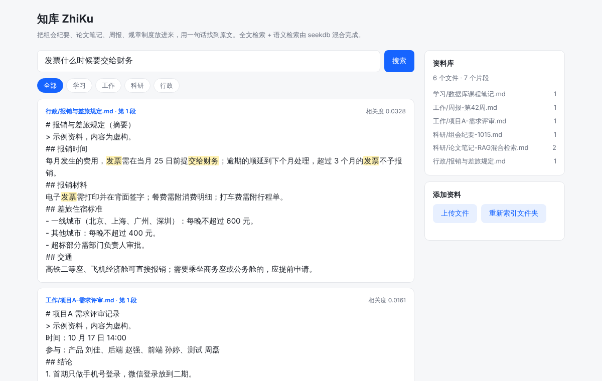
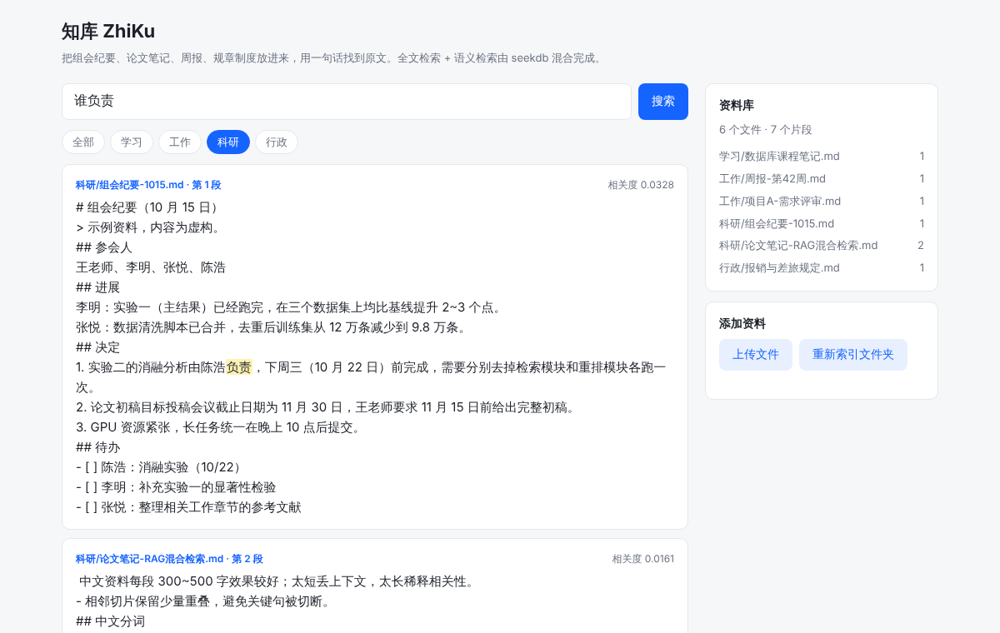

真正花时间的不是做事，而是找到之前定下来的那件事
组会纪要在一个文件夹，论文笔记在另一个，规章制度又是一份 PDF，想找一句话要挨个打开。
记得"发票什么时候交"，原文写的却是"当月 25 日前提交给财务"，Ctrl+F 无能为力。
"消融实验谁负责、哪天截止"，问一遍群里、翻一遍纪要，下周又忘了。
本地运行，资料不出电脑
指定一个文件夹，自动读取 Markdown / TXT / PDF，切成适合检索的片段；也可以在网页里直接上传。
关键词精确命中 + 语义相近召回，两路结果融合排序，换个说法也能找到。
子文件夹自动成为类别（科研 / 工作 / 行政 / 学习），一键缩小范围。
结果直接给出文件名和第几段，并高亮关键词，不用再打开整份文件。
一个嵌入式数据库同时完成全文索引、向量索引和融合排序
res = self.col.hybrid_search(
query={"where_document": {"$contains": keyword_query(q)}, "n_results": k * 3}, # 全文
knn={"query_texts": [q], "n_results": k * 3}, # 向量
rank={"rrf": {}}, # 融合
n_results=k,
include=["documents", "metadatas"],
)
点一个问题，看看知库从示例资料里找到了什么
网站是静态页面，这里展示的是本地运行 python -m zhiku export-demo 时 seekdb 返回的真实检索结果；示例资料内容均为虚构。想搜自己的资料，请按下方步骤本地运行。
本地运行后在浏览器里使用


需要 Python 3.11+，Linux 或 macOS
git clone -b 2026-competition-ecosystem https://github.com/Luchutong/powercontext.git cd powercontext/qoder pip install -r requirements.txt # 导入示例资料（首次会下载约 95MB 的中文向量模型） python -m zhiku ingest ./sample_docs # 运行验证样例，生成 seekdb 检索记录 docs/verify-log.md python -m zhiku verify # 打开网页界面：http://127.0.0.1:8000 python -m zhiku serve --docs ./sample_docs
想用自己的资料，把 ./sample_docs 换成你的文件夹即可，子文件夹名会成为类别。
| 模块 | 技术 |
|---|---|
| 数据库与检索 | seekdb（pyseekdb 嵌入式模式）：全文索引 + 向量索引 + RRF 混合检索 |
| 向量模型 | bge-small-zh-v1.5（本地 ONNX）；可切换阿里云百炼 text-embedding-v4 |
| 后端 | Python · FastAPI |
| 前端 | 原生 HTML / CSS / JavaScript |
| 开发与发布 | Qoder · Qoder Sites |